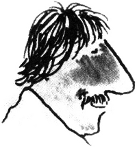

İngiltere’de, Londra’da doğmuşum. Yağmur yağıyormuş.
Tam 15 yıl boyunca Latince okuduktan sonra, reklamcılığa girmeye karar verdim.
İlk işim, Graham ve Giles adlı bir reklam şirketinde çıraklıktı. Sanatçıların su kaplarını değiştirirdim (o günlerde tasarılarını suluboyayla boyarlardı) ve onlara çay yapardım. Bütün bunlar sihirbaz yapımcılardan önceydi. Hatta sentetik çimentonun bulunuşundan bile önceydi; yani o kadar yaşlıyım.
Yağmur yağıyordu, zaten hep yağardı, ben de o zamanlar en sevdiğim TV programını izliyordum; Sunset Strip’i. Kendi kendime dedim ki: Off yahu; güneş, palmiyeler, kadınlar!” Babam da bana dönüşü olmayan bir bilet verdi.
Jack Foster ile 30 yıl önce Los Angeles’taki Erwin Wasey Reklam Ajansı’nda tanıştık ve sonra da Foote ve Cone&Belding’de birlikte çalıştık.
Yaklaşık 17 yıldır birlikte çalışıyoruz. Dehşet keyifli anlar yaşadık.
Bu kitabın hazırlanışı da o “dehşet”lerden biri.